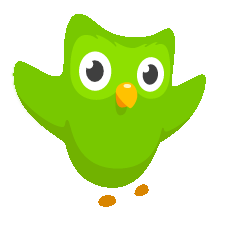
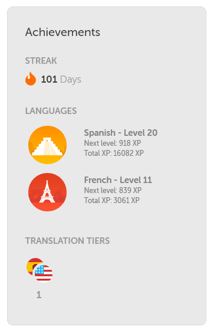
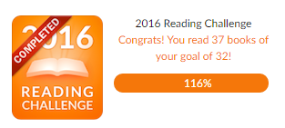
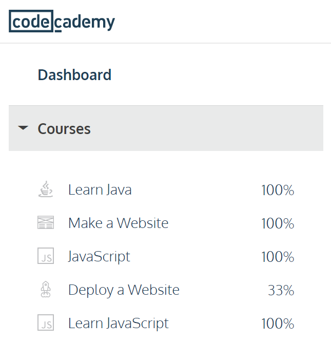
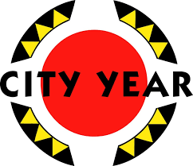

Campaigning For A Kinder World
Fostering An Educated and Compassionate Self
Mission
If the saying goes the more you know the more you realize how much you don't know, then I want to know enough to have some incling of how little I know in both knowledge and human experience. I would like to use my intelligence, technical expertise, and problem solving skills to undermine the great injustices of society, and I have been described as articulate, highly organized, an excellent listener, and a humanitarian. I act to leave a legacy of kindness that resonates past my own influence and makes the world a better place.
Projects
Spanish
Expanding my ability to communicate
 I am using free online resourses like Duolingo and LearnSpanish, and have committed to practing every day. I am focusing on Spanish because it is both a widely used language nationally and internationally, and is fairly accesable from english. One of my life goals is to learn another language fluently and spend at least a year living in a country that uses it as the main language. I believe that this would be great experience to learn and appreciate how little I know of how people live around the world, from small nuances to vast gulfs of cultural communication or resources.
Reading
Educating myself on the other expieriences
I participated in the 2016 GoodReads Reading Challenge to encourage myself to read and grow. I love reading, not only to learn factual information, but to also grow as a person and stand in the shoes of others. In January I set my goal for 32 books, and intentionally read books from diverse perspectives. I surpased my original goal and was able to complete 37 books. My goal for 2017 is to increase my reading goal from 32 to 52, a rate of one book a week, and write a short review of each one to give back into a system I benefit from as well as help me understand and remember the content.
Programming
Creating tools for myself and others
Software is one of the most flexible tools we have ever created and programming and software engineering are necesssary and fun skills going forward. I had taken some formal classes on programming in college, Java I & II, and Computer Science for Engineers (MatLab), and returned to TA Comp. Sci. for Eng. However a year after graduating I remembered the concepts but I was rusty on specifics. I want to have sufficient depth of knowledge that I am able to create a standalone program or app. I have used Codecademy to both practice the language I already know, and to learn new ones. I have taught myself the basics of HTML and CSS in order to build this website, and am making headway with JavaScript.
Adventures


City Year
Give a year #MakeBetterHappen

City Year is an Americorps program that aims to address the drop out crisis in our nations most underserved schools. Americorps volunteers work full time as mentors and tutors to support students learning and growth. I proudly served with City Year Sacramento for the 2015-2016 year in a 9th grade Algebra 1 classroom.